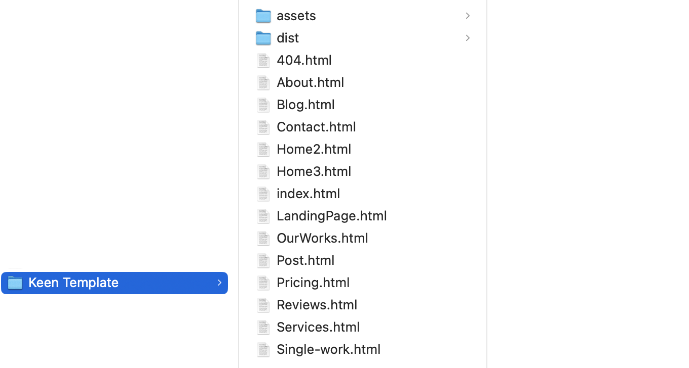
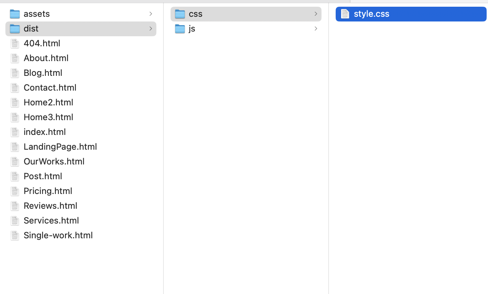
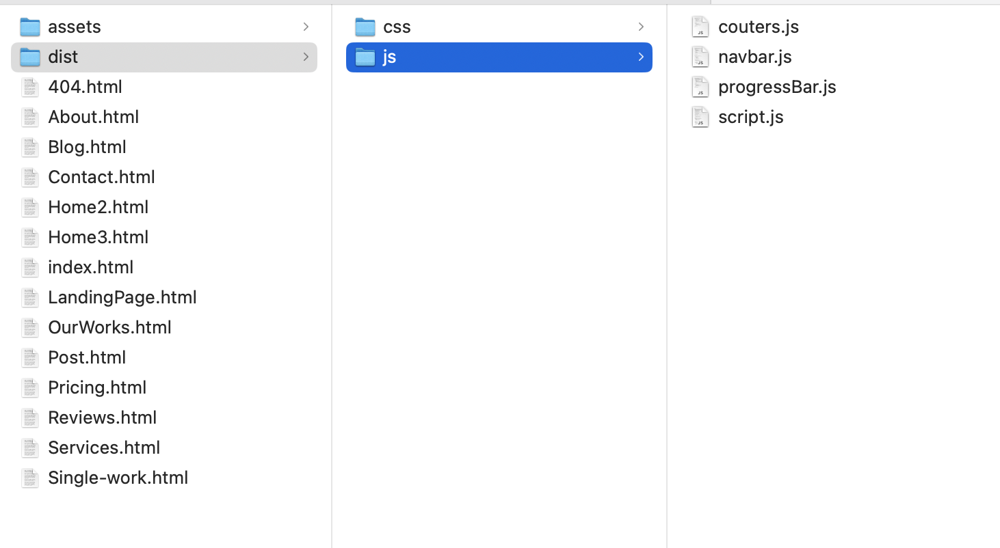

Created: 10/4/2024
By: SocioLib
Email: mail@sociolib.com
Thank you for purchasing our template. If you have any questions that are beyond the scope of this help file, please feel free to email via our user page contact form here. Thank you!
This template is based on Bootstrap 5 and uses the default Bootstrap 12 column grid system. Learn more on Bootstrap documentation.
The template style is controlled by style.css located under dist/css/ folder.
The javascripts used in this template are located under dist/js/ folder.
Thank you.
SocioLib